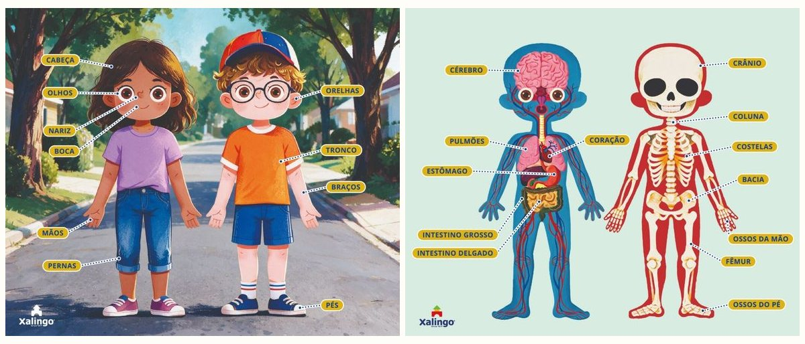

A câmera reconhece o quebra-cabeça e mostra o corpo em pé, com os órgãos, o esqueleto e a explicação de cada parte.

Monte um dos dois quebra-cabeças e deixe num lugar bem iluminado.
Toque em “Abrir a câmera” e aponte o celular para o quebra-cabeça inteiro.
Toque no botão amarelo para ouvir a explicação de cada parte.
Para a câmera funcionar, abra este endereço no Chrome (Android) ou no Safari (iPhone), e não dentro do Instagram, do Facebook ou do TikTok.
Indicado para crianças a partir de 4 anos. Brinque com um adulto por perto e em um lugar seguro. Use a câmera por pouco tempo de cada vez: ligada por muito tempo, ela esquenta o celular e gasta bateria. A imagem da câmera é usada só neste aparelho para reconhecer o quebra-cabeça: nenhuma foto é enviada ou guardada.Privacidade · Contagem de acessos